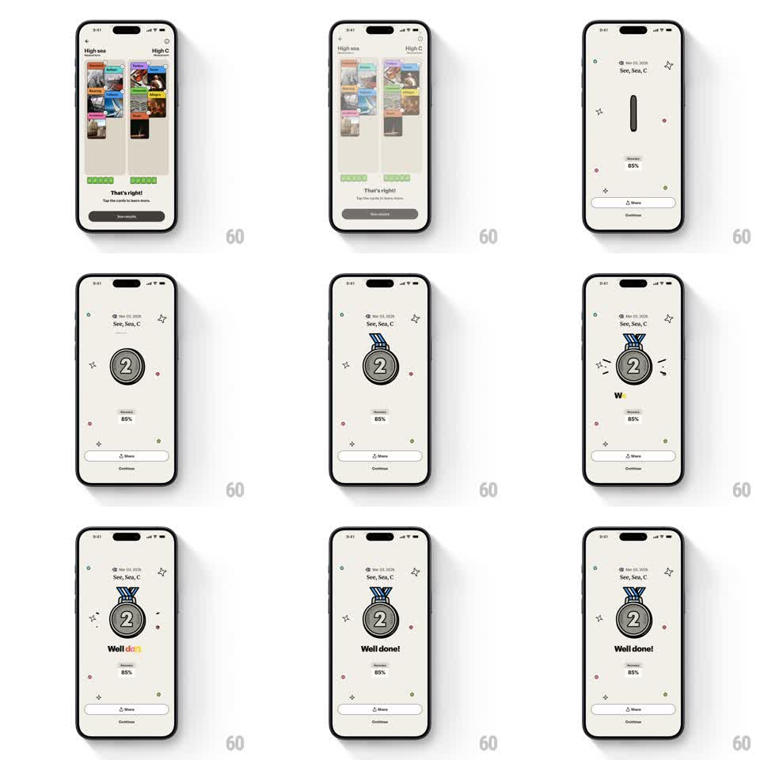

Media
Frame-by-frame

Rebuild this animation 1:1: Spark's medal recap - the session summary screen springs a silver "2" medal into view with an elastic bounce, draws its ribbon, scatters sparkle particles, and types "Well done!" in rainbow letters over the accuracy pill and Share/Continue buttons.

Rebuild this animation 1:1: Spark's medal recap - the session summary screen springs a silver "2" medal into view with an elastic bounce, draws its ribbon, scatters sparkle particles, and types "Well done!" in rainbow letters over the accuracy pill and Share/Continue buttons.
## Integration
Integration: stack-agnostic spec - springs given as stiffness/damping, timed motions as duration + curve; map every value to your framework and animation library of choice.
## Scene
Recap screen on cream: date + topic line ("See, Sea, C") top-center, medal stage mid-screen, "Accuracy 85%" pill below it, then the celebration line "Well done!", with Share and Continue buttons at the bottom.
## Motion spec
Pattern: one-shot celebration - elastic medal drop with particles and rainbow typewriter.
- The medal drops in from a thin vertical sliver (scaleY 0 -> 1, then scale 1.15 -> 1, spring ~260/14, ~600ms) with a clear elastic wobble.
- The ribbon draws on above the medal (path draw, 300ms, starting as the medal lands).
- 6-8 sparkle particles (four-point stars, small dots) pop around the medal (scale 0 -> 1 -> 0, 400ms, staggered 60ms, positions randomized per replay).
- "Accuracy 85%" fades in (200ms) as the medal settles.
- "Well done!" types letter by letter (~90ms per char), each letter landing in a different rainbow hue before settling to dark.
- Buttons were present from the start; nothing blocks them.
## Calibration
- The medal's elastic overshoot is the personality - allow 2 visible bounces.
- Sparkles are seasoning: small, quick, never overlapping the medal's number.
## Reduced motion
Medal fades in at final size (250ms); title appears whole (200ms); no particles.
## Don't miss
- The medal hangs from its ribbon - the ribbon must draw before the wobble ends.
- Rainbow typing resolves to plain dark text; the rainbow is transient.